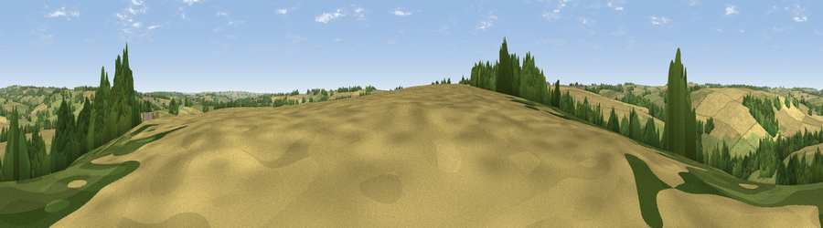

Viewpoint near Guiting Power
#33067 in England · top 68% of its area beats it · near Guiting PowerThe view, rendered

A 360° render of this exact spot computed from the terrain model, tree cover and land cover — summer colours, afternoon light, calibrated against photographs of famous viewpoints. Real trees, hedges and buildings will differ in detail.
The panorama
Grey silhouette: terrain skyline in each direction (720 bearings, Earth curvature and refraction included). Dashed green: skyline with trees (+15 m) and buildings (+8 m) as obstacles. Blue strip: how far the ground is visible on each bearing.
Where the view opens
Wedge length = distance to the farthest visible ground on that bearing (vegetation-aware). Rings at 10, 25 and 50 km.
What fills the view
43% cropland · 42% grassland · 15% woodland
Angular shares of the visible panorama (visual magnitude), not map area. Landscape diversity 0.45 (0–1 Shannon).
Key numbers
More beautiful places nearby
The staircase of upgrades: each row has a higher view potential than everything closer. Driving times are estimates from straight-line distance, calibrated against real road routing — check an actual route before setting out.
| Place | Direction | Drive | Score |
|---|---|---|---|
| Viewpoint near Hawling | W · 4 km | ~9 min | 45.7 |
| Viewpoint near Temple Guiting | NNE · 4 km | ~9 min | 47.2 |
| Roel Hill | WNW · 5 km | ~11 min | 67.6 |
| Viewpoint near Sudeley | NW · 7 km | ~14 min | 68.8 |
| Viewpoint near Charlton Abbots | WNW · 7 km | ~15 min | 70.2 |
| Salter's Hill | NW · 8 km | ~16 min | 72.3 |
| Viewpoint near Prestbury | W · 10 km | ~20 min | 73.0 |
| Viewpoint near Stanton | NNW · 10 km | ~20 min | 75.8 |
51.90524, -1.86441 · source: screening · position refined by local search. Computed location — check access rights before visiting.